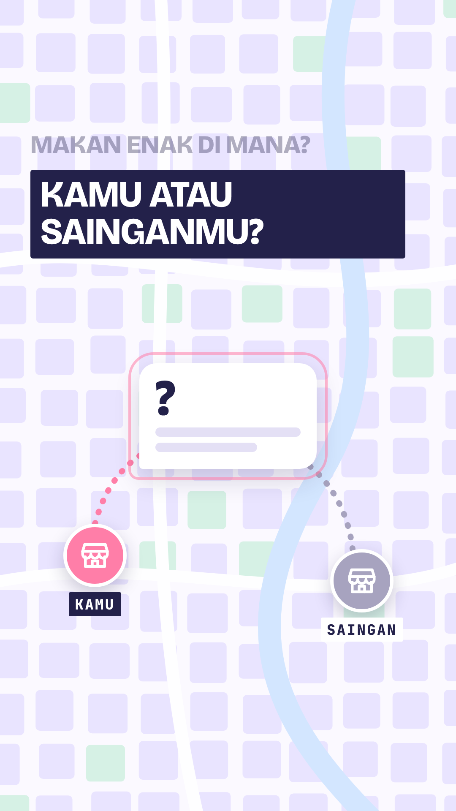
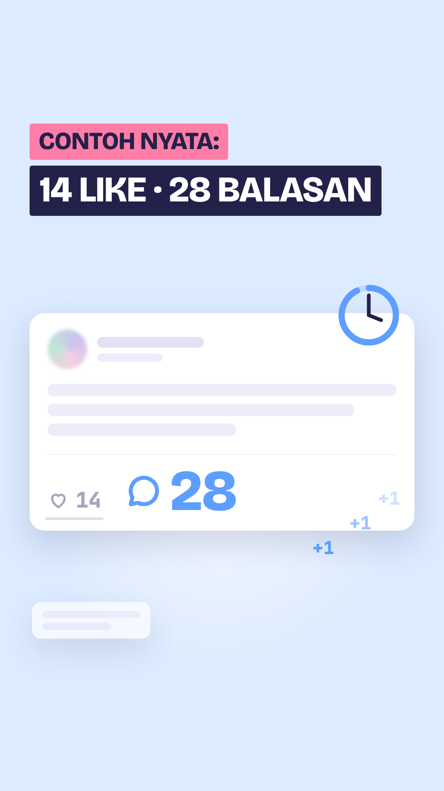
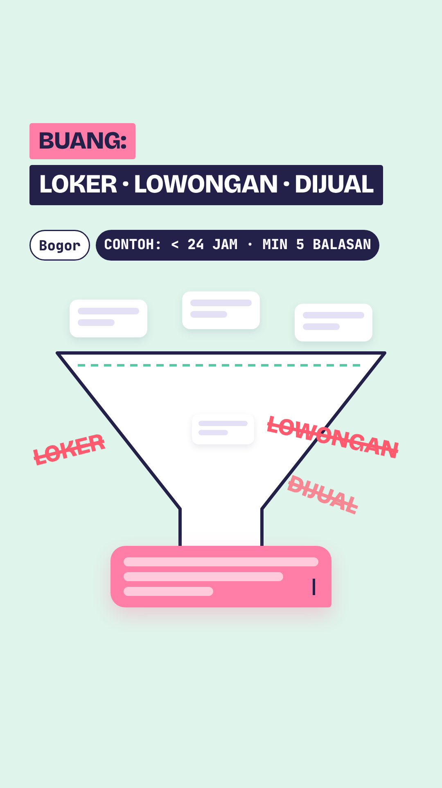
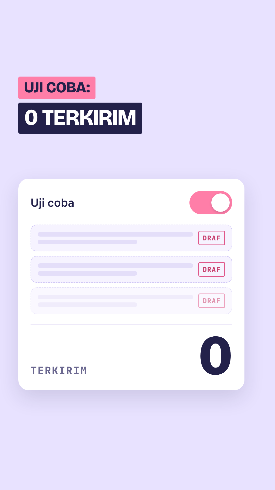
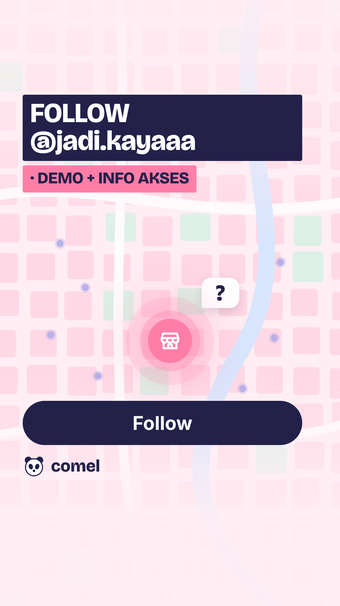

Storyboard 17 adegan. Semua teks layar dan angka disalin persis dari naskah, termasuk label CONTOH NYATA dan CONTOH. Gaya visual: pastel ala Korea. Tiap babak punya latar pastel sendiri (lavender, biru langit, mint, ungu muda, pink), teks navy tua, dan pink stroberi sebagai warna “kamu”.
Usulan saya (4 kata), diambil dari fitur uji coba yang memang ada. Saya tidak membuat diskon, harga, atau masa gratis karena belum ada datanya. Kalau ada penawaran nyata, kirim saja teksnya.
Naskah tidak memberi teks layar untuk bagian 7 hari, tetapi VO menyebut “contoh tujuh hari”. Saya usulkan chip kecil CONTOH agar konsisten. Bisa dihapus.
Tidak ada subtitle VO kata per kata. Kalau ingin subtitle penuh untuk penonton tanpa suara, saya tambahkan di bawah area aman.
Ini satu-satunya teks di luar naskah, sebagai label di UI generik. Tidak ada logo Threads/Meta, nama, atau foto asli.
Gambar statis 1080×1920 untuk adegan kunci. Kotak merah putus-putus di versi kerja menandai area aman (tidak tertutup tombol aplikasi); di sini ditampilkan versi bersih.





Timecode perkiraan berdasarkan tempo 2,4–2,6 kata/detik. Setelah VO jadi, timecode dikunci ke stempel waktu per kata dari ElevenLabs.
Peta kota (blok lavender, sungai biru muda) tampil dengan zoom-in pelan. Gelembung pertanyaan putih “?” muncul di tengah dengan pop dan cincin pink berdenyut.
Orang di kotamu nanya: makan enak di mana?
Musik mulai langsung (pluck/kalimba ±100 BPM). SFX “pop” saat gelembung muncul.
Dua avatar toko masuk dari bawah: KAMU (pink) dan SAINGAN (abu-lavender). Jejak titik menuju gelembung, keduanya berlari; kamera sedikit goyang. Teks pertama memudar menjadi bayangan.
Yang jawab, kamu atau sainganmu?
Whoosh dua arah, langkah ringan; beat masuk di “sainganmu”.
Zoom-through ke dalam gelembung; latar berganti ke biru langit pastel. Gelembung berubah menjadi kartu postingan generik: avatar blur, nama berupa bar abu, isi berupa garis samar. Chip CONTOH NYATA menempel di atas kartu.
Ini nyata.
Transisi swoosh, musik dipotong 0,3 dtk di “nyata” (stop-hit), lalu lanjut.
Counter like diam di 14 (abu, ada garis bawah “beku”). Counter balasan biru naik 0 → 28 sambil “+1” beterbangan; jam lingkaran di pojok berputar penuh (24 jam). Di “dua kali lipat”, angka 28 membesar sesaat.
Satu pertanyaan rekomendasi makan di Bogor dapat 28 balasan dalam 24 jam. Likenya cuma 14, tapi balasannya dua kali lipat.
Tick ringan tiap angka naik (makin cepat), “ding” saat 28.
Kartu pertama bergeser ke kiri dan mengecil; kartu kedua (disamarkan) masuk dari kanan. Counter balasan naik ke 23, jam kecil hanya berputar 5 jam.
Satu lagi, mau belajar bahasa Jepang di Bogor, 23 balasan dalam 5 jam.
Swipe; tick counter; “ding” di 23.
Kartu membuka daftar balasan (garis samar). Satu balasan berbingkai pink naik ke atas dan bersinar; avatar penanya menoleh ke arahnya (ikon mata kecil).
Penanyanya lagi cari jawaban. Yang menjawab dengan tepat, dia yang berpeluang dilirik.
Shimmer lembut saat balasan pink menyala.
Ilustrasi datar: pemilik usaha di kasir melayani pelanggan; ponsel tertelungkup di meja. Jam dinding berdetak, tiap 15 menit ponsel bergetar dan notifikasi menumpuk tak tersentuh. Warna sedikit pudar.
Tapi kamu nggak bisa cek Threads tiap 15 menit, 64 kali sehari. Kamu sedang melayani pelanggan.
Musik di-low-pass (redup), jam berdetak, buzz getar ponsel, bel kasir.
Logo panda Comel muncul di layar ponsel yang berbalik; warna kembali cerah ke latar mint. Kolom kata kunci terketik “Bogor” (chip “nama kotamu”).
Comel yang mantengin buatmu. Masukkan kata kunci, misalnya nama kotamu.
Musik kembali penuh di “Comel”. Suara ketik ringan.
Corong filter digambar dari atas. Chip syarat menempel di bibir corong. Kartu postingan berjatuhan ke corong; yang terlalu lama atau sepi memantul keluar dan memudar.
Atur syaratnya, contoh di bawah 24 jam dan minimal 5 balasan, biar kamu datang selagi obrolannya hangat;
Klik saat chip menempel; “plop” kartu masuk corong.
Kata LOKER, LOWONGAN, DIJUAL tercoret merah satu per satu dan terlempar keluar corong.
loker, lowongan, dijual dibuang.
Tiga “scratch” pendek sinkron dengan tiap kata.
Dari ujung corong keluar gelembung komentar pink; garis teks terisi satu per satu dengan kursor ketik. Ikon toko kecil (“info bisnismu”) menyumbang garis ke gelembung.
Comel menulis komentar yang menjawab pertanyaannya, pakai info bisnismu.
Ketik lembut, “pop” saat gelembung selesai.
Kalender 7 kotak: avatar yang sama di hari 1 dicentang, hari 2–6 bergembok, hari ke-7 terbuka. Chip kecil CONTOH di pojok kalender.
Perlu acc: chip CONTOH di adegan ini.
Orang yang sama baru disapa lagi setelah contoh 7 hari, biar nggak nyepam.
Tick per hari, “unlock” di hari ke-7.
Latar lavender. Kartu statistik ala dashboard generik: angka 43 naik dari 0, di sebelahnya “0” gagal kirim dengan tanda centang hijau.
Contoh nyata dari dashboard: 43 komentar dalam 24 jam, 0 gagal kirim.
Tick counter, “ding” di 43.
Saklar “Uji coba” digeser ON. Daftar “Preview” menyaring kartu yang lolos; draf bertanda DRAF tersusun. Counter TERKIRIM tetap 0 (berkedip sekali).
Mau coba dulu tanpa kirim apa pun? Preview menunjukkan yang lolos, mode uji coba menulis drafnya, 0 terkirim.
Klik saklar, kertas tersusun.
Jam pasir “5 jam” mengalir cepat di kiri; counter balasan 23 menyala di kanan. Avatar KAMU tiba terlambat dan berhenti.
Telat 5 jam, 23 balasan sudah masuk duluan.
Pasir mengalir, “thud” saat avatar berhenti.
Kartu tersendiri: latar kuning butter pastel penuh, teks navy besar di tengah area aman.
Perlu acc: isi promo.
Coba dulu, kirim belakangan.
Stop-hit pendek sebelum kartu, lalu riser ringan ke CTA.
Zoom-out ke peta kota pink pastel. Pin-pin lavender menyala bertahap; pin bisnismu paling terang dengan halo pink. Gelembung “?” baru muncul di dekatnya. Tombol Follow masuk dari bawah dan ditekan sekali. 1,5 dtk terakhir diam (hold) dengan logo comel.
Pertanyaan berikutnya tinggal tunggu waktu. Follow jadi kaya aa untuk lihat demo Comel dan info aksesnya.
Swell musik, “chime” saat tombol ditekan, musik selesai bersih di 1:28.
Area aman teks: x 72–960 px, y 260–1500 px pada kanvas 1080×1920, supaya teks tidak tertutup caption dan tombol aplikasi.
| Aset | Sumber | Status |
|---|---|---|
| Voice-over “Cahaya”, 1 file + stempel waktu per kata | ElevenLabs (setelah acc), butuh ELEVENLABS_API_KEY | Menunggu acc + kunci API |
| Musik latar ±100 BPM, ceria-ringan, ±90 dtk | Pustaka bebas royalti dengan lisensi iklan (mis. pustaka audio platform), dipilih pengguna | Perlu dipilih |
| SFX: pop, whoosh, tick, ding, scratch, klik saklar, pasir, chime, bel kasir, getar ponsel | Pustaka SFX bebas royalti, atau disintesis | Perlu dipilih |
| Peta kota generik | Digambar ulang (vektor), bukan peta asli | Ada |
| Kartu postingan tiruan (avatar blur, nama bar) | Vektor/HTML | Ada |
| Ikon toko (KAMU/SAINGAN), hati, gelembung balasan, jam, jam pasir, kalender, corong, saklar | Vektor/HTML | Sebagian ada; jam pasir & kalender dibuat saat render |
| Ilustrasi pemilik usaha di kasir (S07) | Ilustrasi datar vektor, dibuat baru | Dibuat saat render |
| Tanda panda “comel” | Vektor sederhana dari ikon 🐼 aplikasi | Ada (draf) |
| Font: Bricolage Grotesque, Inter, JetBrains Mono | Google Fonts (lisensi OFL) | Ada |
ELEVENLABS_API_KEY di pengaturan environment cloud (bukan di chat).video/naskah3/vo.txt (model multibahasa, bahasa Indonesia) beserta stempel waktu per kata.